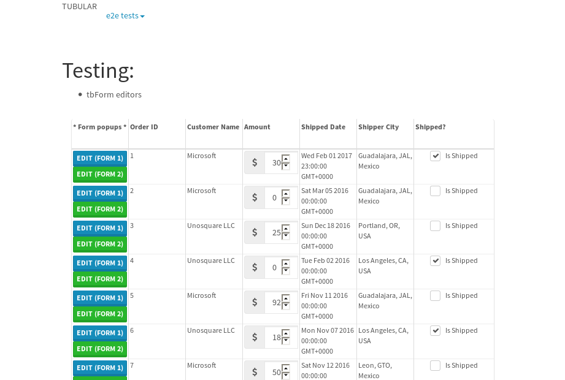
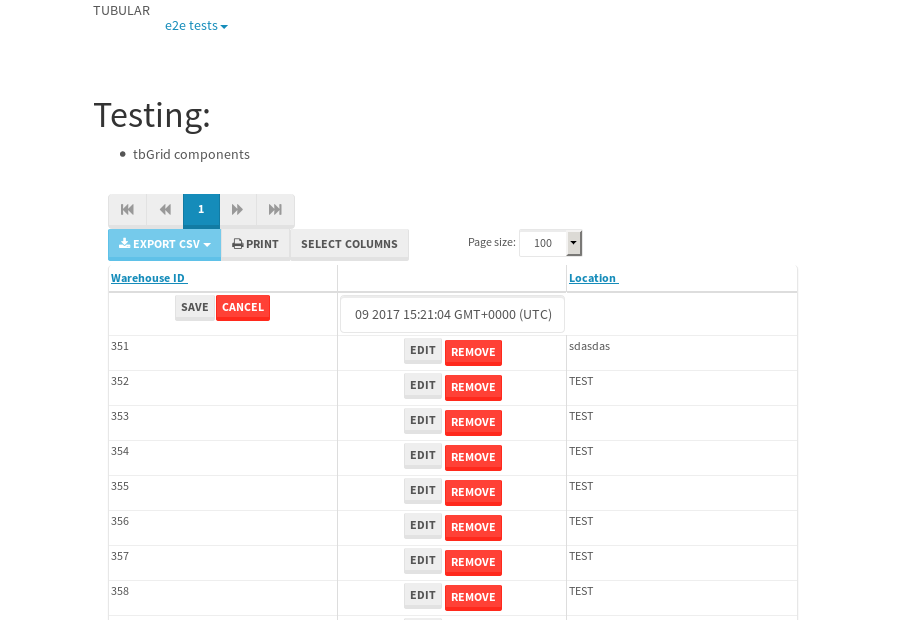

tbColumn.Grid Sorting - 26.04sTests: 5Skipped: 0Failures: 3 should sort data in ascending order then on descending order when sorting by Order Id column - 5.651sExpected '1' to be '500'.✗Expected '20' to be '481'.✗Tests passed: 50.00%should order data in ascending order when click-sorting an unsorted text column - 6.08sTests passed: 100.00%should order data in descending order when click-sorting an ascending-sorted text column - 5.099sExpected 'Advanced Technology Systems' to be 'Vesta'.✗Tests passed: 0.00%should order data in ascending order when click-sorting an unsorted date column - 4.694sTests passed: 100.00%should order data in descending order when click-sorting twice an unsorted date column - 4.511sExpected '12/30/2015' to match /1\/01\/2016/.✗Tests passed: 0.00%
tbEmptyForm - 3.551sTests: 3Skipped: 0Failures: 0 should have an empty required field - 0.355sTests passed: 100.00%should not be able to click on save - 0.027sTests passed: 100.00%should load default value for numeric field - 0.031sTests passed: 100.00%
Tubular Filters.tbColumnFilter - 95.279sTests: 12Skipped: 0Failures: 0 should cancel filtering when clicking outside filter-popover - 7.628sTests passed: 100.00%should disable Value text-input for "None" filter - 5.7sTests passed: 100.00%should disable apply button for "None" filter - 5.747sTests passed: 100.00%should decorate popover button when showing data is being filtered for its column - 11.015sTests passed: 100.00%should correctly filter data for the "Equals" filtering option - 7.609sTests passed: 100.00%should correctly filter data for the "Not Equals" filtering option - 7.191sTests passed: 100.00%should correctly filter data for the "Contains" filtering option - 7.167sTests passed: 100.00%should correctly filter data for the "Not Contains" filtering option - 7.211sTests passed: 100.00%should correctly filter data for the "Starts With" filtering option - 6.081sTests passed: 100.00%should correctly filter data for the "Not Starts With" filtering option - 6.169sTests passed: 100.00%should correctly filter data for the "Ends With" filtering option - 6.131sTests passed: 100.00%should correctly filter data for the "Not Ends With" filtering option - 6.136sTests passed: 100.00%
Tubular Filters.tbColumnDateTimeFilter - 123.453sTests: 12Skipped: 0Failures: 0 should cancel filtering when clicking outside filter-popover - 6.252sTests passed: 100.00%should disable Value text-input for "None" filter - 5.557sTests passed: 100.00%should disable apply button for "None" filter - 5.891sTests passed: 100.00%should clear filtering when clicking on Clean button - 16.667sTests passed: 100.00%should decorate popover button when showing data is being filtered for its column - 10.922sTests passed: 100.00%should correctly filter data for the "Equals" filtering option - 6.296sTests passed: 100.00%should correctly filter data for the "Not Equals" filtering option - 6.266sTests passed: 100.00%should correctly filter data for the "Between" filtering option - 10.884sTests passed: 100.00%should correctly filter data for the "Greater-or-equal" filtering option - 10.893sTests passed: 100.00%should correctly filter data for the "Greater" filtering option - 10.877sTests passed: 100.00%should correctly filter data for the "Less-or-equal" filtering option - 10.791sTests passed: 100.00%should correctly filter data for the "Less" filtering option - 10.982sTests passed: 100.00%
Tubular Filters.tbColumnOptionsFilter - 77.836sTests: 3Skipped: 0Failures: 0 should cancel filtering when clicking outside filter-popover - 7.255sTests passed: 100.00%should decorate popover button when showing data is being filtered for its column - 10.772sTests passed: 100.00%should filter column-elements in accordance to the selected filter when selecting a single option - 48.33sTests passed: 100.00%
Tubular Filters.tbTextSearch - 45.033sTests: 5Skipped: 0Failures: 0 min-chars is not set - 0.075sTests passed: 100.00%should filter data in searchable-column customer name to matching inputted text, starting from 3 characters - 5.94sTests passed: 100.00%should filter data in searchable-column shipper city to matching inputted text, starting from 3 characters - 11.028sTests passed: 100.00%should show clear button when there is inputted text only - 5.653sTests passed: 100.00%should clear filtering when clicking clear button - 15.552sTests passed: 100.00%
tbForm related components.tbCheckboxField - 3.901sTests: 2Skipped: 0Failures: 1 should save changes on "SAVE" - 1.156sExpected 51 to be -1.✗Tests passed: 50.00%should discard changes on "CANCEL" - 1.144sTests passed: 100.00%
tbForm related components.tbDropDownEditor - 5.367sTests: 5Skipped: 0Failures: 0 should set initial input value to the value of "value" attribute when defined - 0.791sTests passed: 100.00%should show the component name value in a label field when "showLabel" attribute is true - 0.781sTests passed: 100.00%should show a help field equal to this attribute, is present - 0.738sTests passed: 100.00%should submit modifications to item/server when clicking form "Save" - 1.006sTests passed: 100.00%should NOT submit modifications to item/server when clicking form "Cancel" - 1.394sTests passed: 100.00%
tbForm related components.tbTextArea - 8.086sTests: 7Skipped: 0Failures: 0 should set initial input value to the value of "value" attribute when defined - 0.78sTests passed: 100.00%should be invalidated when the number of chars is not in the range of "min" and "max" attributes - 1.309sTests passed: 100.00%should show the component name value in a label field when "showLabel" attribute is true - 0.795sTests passed: 100.00%should show a help field equal to this attribute, is present - 0.856sTests passed: 100.00%should require the field when the attribute "required" is true - 1.063sTests passed: 100.00%should submit modifications to item/server when clicking form "Save" - 1.21sTests passed: 100.00%should NOT submit modifications to item/server when clicking form "Cancel" - 1.306sTests passed: 100.00%
tbForm related components.tbDateEditor - 6.023sTests: 6Skipped: 0Failures: 0 should set initial date value to the value of "value" attribute when defined - 0.762sTests passed: 100.00%should be invalidated when the date is not in the range of "min" and "max" attributes - 1.212sTests passed: 100.00%should show the component name value in a label field when "showLabel" attribute is true - 0.676sTests passed: 100.00%should show a help field equal to this attribute, is present - 0.743sTests passed: 100.00%should submit modifications to item/server when clicking form "Save" - 0.921sTests passed: 100.00%should NOT submit modifications to item/server when clicking form "Cancel" - 0.98sTests passed: 100.00%
tbForm related components.tbTypeaheadEditor - 10.211sTests: 7Skipped: 0Failures: 2 should show an options list when there is an API-info/component entered-data - 1.241sTests passed: 100.00%should select the option clicked - 1.267sTests passed: 100.00%should show a "delete" button when an option/match is selected, and delete the option if button is clicked - 2.053sTests passed: 100.00%should show a label value equal to the component name when "showLabel" attribute is true - 0.96sTests passed: 100.00%should require a value when "require" attribute is true - 1.011sExpected false to be true.✗Tests passed: 0.00%should submit modifications to item/server when clicking form "Save" - 1.445sExpected 'Guadalajara, JAL, Mexico' to match 'Portland, OR, USA'.✗Tests passed: 0.00%should NOT submit modifications to item/server when clicking form "Cancel" - 1.314sTests passed: 100.00%
tbForm related components.tbSimpleEditor - 8.675sTests: 9Skipped: 0Failures: 0 should set initial input value to the value of "value" attribute when defined - 0.616sTests passed: 100.00%should be invalidated when the number of chars is not in the range of "min" and "max" attributes - 1.215sTests passed: 100.00%should show the component name value in a label field when "showLabel" attribute is true - 0.596sTests passed: 100.00%should set input placeholder to the value of "placeholder" attribute - 1.661sTests passed: 100.00%should validate the control using the "regex" attribute, if present - 0.732sTests passed: 100.00%should show a help field equal to this attribute, is present - 0.617sTests passed: 100.00%should require the field when the attribute "required" is true - 0.798sTests passed: 100.00%should submit modifications to item/server when clicking form "Save" - 0.844sTests passed: 100.00%should NOT submit modifications to item/server when clicking form "Cancel" - 1.077sTests passed: 100.00%
tbForm related components.tbNumericEditor - 7.114sTests: 7Skipped: 0Failures: 0 should set initial component value to the value of "value" attribute when defined - 0.616sTests passed: 100.00%should be invalidated when the entered number is not in the range of "min" and "max" attributes - 1.08sTests passed: 100.00%should show the component name value in a label field when "showLabel" attribute is true - 0.676sTests passed: 100.00%should show a help field equal to this attribute, is present - 0.707sTests passed: 100.00%should require the field when the attribute "required" is true - 1.257sTests passed: 100.00%should submit modifications to item/server when clicking form "Save" - 0.812sTests passed: 100.00%should NOT submit modifications to item/server when clicking form "Cancel" - 1.308sTests passed: 100.00%
tbForm Connection Error NoModelKey - 3.79sTests: 1Skipped: 0Failures: 0 tbForm connection error functionality - 0.003sTests passed: 100.00%
tbForm Connection Error NoServerUrl - 3.746sTests: 1Skipped: 0Failures: 0 tbForm connection error functionality - 0.003sTests passed: 100.00%
tbGridComponents - 12.567sTests: 6Skipped: 0Failures: 5 should add item with newRow method - 4.778sExpected '410 EDIT REMOVE Tue May 09 2017 14:07:41 GMT+0000 (UTC)' not to be '410 EDIT REMOVE Tue May 09 2017 14:07:41 GMT+0000 (UTC)'.✗Tests passed: 50.00%should add item with newRow method and cancel action - 0.422sFailed: ElementNotVisibleError✗Tests passed: 0.00%should update item with tbSaveButton - 1.018sExpected '' to be 'TEST'.✗Tests passed: 0.00%should NOT update item on cancel Update action - 0.568sFailed: ElementNotVisibleError✗Tests passed: 0.00%should remove item with tbRemoveButton - 1.815sExpected 60 not to be 60, 'should remove the row from the table'.✗Tests passed: 50.00%should NOT remove item on cancel Remove action - 0.712sTests passed: 100.00%
tbGridPager.navigation buttons - 2.951sTests: 1Skipped: 0Failures: 0 should perform no action when clicking on the numbered navigation button corresponding to the current-showing results page - 0.711sTests passed: 100.00%
tbGridPager.navigation buttons.first/non-last results page related functionality - 0.852sTests: 2Skipped: 0Failures: 0 should disable "first" and "previous" navigation buttons when in first results page - 0.131sTests passed: 100.00%should enable "last" and "next" navigation buttons when in a results page other than last - 0.721sTests passed: 100.00%
tbGridPager.navigation buttons.last/non-first results page related functionality - 1.388sTests: 2Skipped: 0Failures: 0 should disable "last" and "next" navigation buttons when in last results page - 0.684sTests passed: 100.00%should enable "first" and "previous" navigation buttons when in a results page other than first - 0.704sTests passed: 100.00%
tbGridPager.page navigation - 4.714sTests: 5Skipped: 0Failures: 0 should go to next results page when clicking on next navigation button - 1.219sTests passed: 100.00%should go to previous results page when clicking on previous navigation button - 1.398sTests passed: 100.00%should go to last results page when clicking on last navigation button - 0.726sTests passed: 100.00%should go to first results page when clicking on first navigation button - 0.731sTests passed: 100.00%should go to corresponding results page when clicking on a numbered navigation button - 0.64sTests passed: 100.00%
tbGridPagerInfo - 7.047sTests: 2Skipped: 0Failures: 0 should show text in accordance to numbered of filter rows and current results-page - 2.365sTests passed: 100.00%should show count in footer - 0.035sTests passed: 100.00%
tbPageSizeSelctor - 16.698sTests: 4Skipped: 0Failures: 0 should filter up to 10 data rows per page when selecting a page size of "10" - 3.266sTests passed: 100.00%should filter up to 20 data rows per page when selecting a page size of "20" - 2.791sTests passed: 100.00%should filter up to 50 data rows per page when selecting a page size of "50" - 3.716sTests passed: 100.00%should filter up to 100 data rows per page when selecting a page size of "100" - 3.294sTests passed: 100.00%
tbSingleForm - 26.814sTests: 8Skipped: 1Failures: 1 should load correct info - 0.001s***Skipped***Tests passed: 0%should change customer name - 3.632sTests passed: 100.00%should save it - 3.759sExpected '' to be 'Saved'.✗Expected '' to be 'Saved'.✗Tests passed: 0.00%should clear the inputs - 3.957sTests passed: 100.00%should update - 3.853sTests passed: 100.00%should reset editor - 3.896sTests passed: 100.00%should not save if not Changes - 3.862sTests passed: 100.00%should not be able to click on save - 3.853sTests passed: 100.00%


{kind=link}
{kind=link}
{kind=link}
{kind=link}